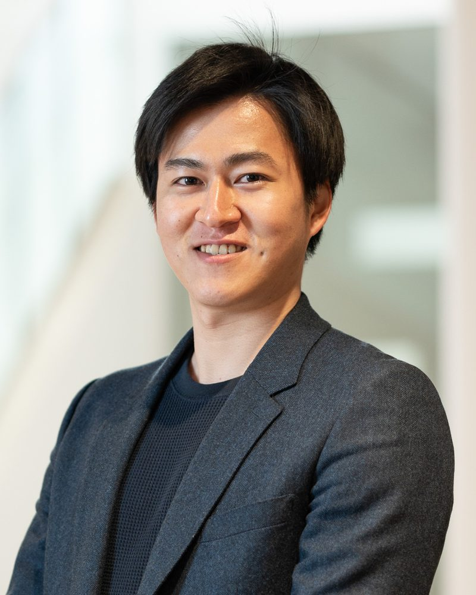
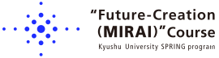
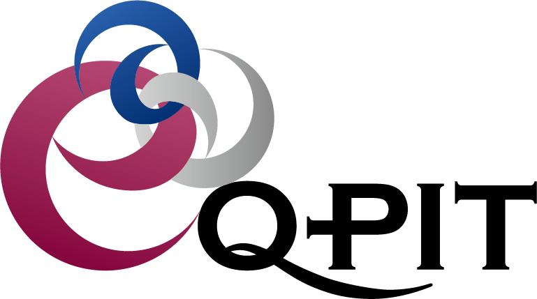

PhotoThe purpose of this study is to develop a quantitative index that can be used as a material for considering the trade-off between the introduction of renewable energy and the preservation of ecosystems on high (250m x 250m) resolution. Based on spatial information and information on revealed and stated preferences of households and industrial sectors, we will evaluate the determinants of preferences for renewable energy and ecosystems using contingent valuation method, conjoint analysis, and multi-criteria decision analysis. Based on this, we will predict the dynamics of renewable energy and ecosystems, and construct and evaluate an environmental sustainability assessment system.
本研究の目的は、再生可能エネルギー導入と生態系保存とのトレードオフの問題を考える材料となる定量的な指標を高解像度（250m×250m単位）で作成することである。空間情報と家庭・産業部門の顕示選好・表明選好の情報を基に、仮想評価法・コンジョイント分析・多基準意思決定分析を用いて、再生可能エネルギーと生態系に対する選好の規定要因を評価する。この評価に基づいて、再生可能エネルギーと生態系の動態予測を行い、都市の環境持続可能性評価システムの構築と評価を行う。

JST SPRING programmeJSTスプリングプログラム
Unit coordinatorユニットコーディネーター